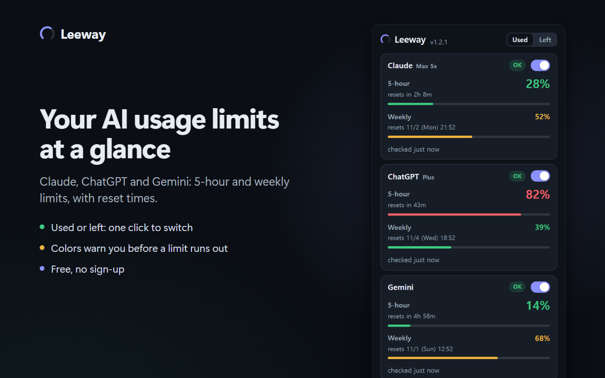

Leeway shows the ChatGPT plan limits from Settings > Usage — the ones Codex, Work, workspace agents and ChatGPT for Excel share — in a popup, the toolbar badge and an always-on-top overlay. Used or left, with reset times.

ChatGPT reports usage in one place: Settings > Usage. Leeway shows what that page shows, and nothing it does not — the plan limits shared by Codex, Work, workspace agents and ChatGPT for Excel. Depending on the account the window is 5-hour, weekly or 30-day.
Ordinary chat conversations are not counted there, so they are not counted here either. If you are looking for a message counter for normal chats, this is not that — and no extension can show a number ChatGPT does not publish.
These are not public, stable APIs and may change without notice.
?, never as 0%.Open overlay in the popup opens a small Leeway window, and its Float on top button (or Enter, right after) turns it into an always-on-top window through Chrome's Document Picture-in-Picture (Chrome 116 or later). Useful while a long Codex run is going: it stays above other apps, and a click collapses it to one line.
Full details: privacy policy.
Exactly what Settings > Usage shows: the plan limits shared by Codex, Work, workspace agents and ChatGPT for Excel. Depending on the account these are 5-hour, weekly or 30-day windows.
No. Ordinary chat conversations are not counted on that page, so they are not counted in Leeway either.
Yes, in the sense that Codex draws on the plan limits shown on Settings > Usage, and those are the numbers Leeway displays. There is no separate Codex-only counter — the limit is shared.
No. Leeway reads it in the background; you only need to be signed in in that Chrome profile.